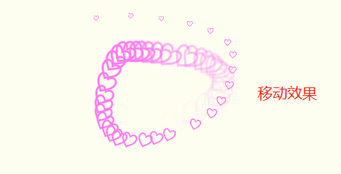

原文出处:本文由博客园博主郭楷丰提供。
原文连接:https://www.cnblogs.com/guokaifeng/p/11121939.html
原文连接:https://www.cnblogs.com/guokaifeng/p/11121939.html
博客园添加背景音乐,背景效果
申请博客园JS权限
申请话术 实例
尊敬的博客园管理员：
请求申请开通js权限，希望能够把自己的博客修饰的漂亮点，点缀自定义js插件效果，希望管理员可以批准，谢谢！- 开通以后就可以使用js代码进行装饰了
- 流程图
添加网易云背景音乐
单曲添加
打开网易云登录账户,搜索自己喜欢的歌曲
复制代码到博客园
看看效果

添加歌单为背景音乐
创建歌单

把喜欢的音乐添加到歌单
拷贝代码到博客园

点击鼠标点击样式
- 鼠标点击效果代码 (❤喜欢就关注一下吧❤ 里边的文字可以根据自己需要进行修改)
<script type="text/javascript">
var a_idx = 0;
jQuery(document).ready(function($) {
$("body").click(function(e) {
var a = new Array("❤喜欢就关注一下吧❤","❤不是点这里哦❤","❤快去点赞❤","❤在文章最下面哦❤","❤快去推荐一下吧❤","❤感谢观看❤","❤");
var $i = $("<span></span>").text(a[a_idx]);
a_idx = (a_idx + 1) % a.length;
var x = e.pageX,
y = e.pageY;
$i.css({
"z-index": 999999999999999999999999999999999999999999999999999999999999999999999,
"top": y - 20,
"left": x,
"position": "absolute",
"font-weight": "bold",
"color": "rgb("+~~(255*Math.random())+","+~~(255*Math.random())+","+~~(255*Math.random())+")"
});
$("body").append($i);
$i.animate({
"top": y - 180,
"opacity": 0
},
1500,
function() {
$i.remove();
});
});
});
</script>其他点击效果

- 其他效果自取地址 自取地址
二次元看板娘
效果
雪花效果
效果
- 代码 调整后添加到博客园装饰的页面即可
<script type="text/javascript">
window.onload = function () {
var minSize = 15; //最小字体
var maxSize = 30;//最大字体
var newOne = 600; //生成雪花间隔
var flakColor = "#1bd3ff"; //雪花颜色
var flak = $("<div></div>").css({position:"absolute","top":"0px"}).html("❉");//定义一个雪花
var dhight = $(window).height(); //定义视图高度
var dw =$(window).width()-80; //定义视图宽度
setInterval(function(){
var sizeflak = minSize+Math.random()*maxSize; //产生大小不等的雪花
var startLeft = Math.random()*dw; //雪花生成是随机的left值
var startOpacity = 0.7+Math.random()*0.3; //随机透明度
var endTop= dhight-100; //雪花停止top的位置
var endLeft= Math.random()*dw; //雪花停止的left位置
var durationfull = 5000+Math.random()*3000; //雪花飘落速度不同
flak.clone().appendTo($("body")).css({
"left":startLeft ,
"opacity":startOpacity,
"font-size":sizeflak,
"color":flakColor
}).animate({
"top":endTop,
"left":endLeft,
"apacity":0.1
},durationfull,function(){
$(this).remove()
});
},newOne);
}
</script>